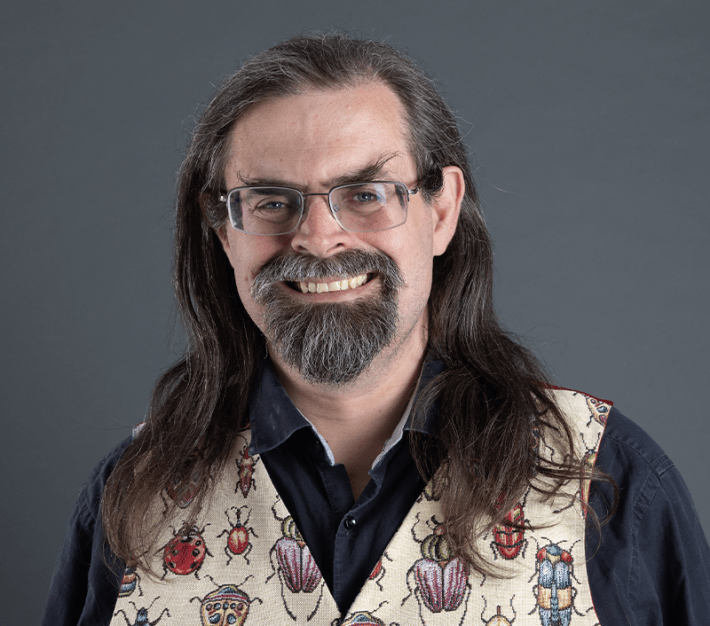

A malfunctioning robot butler in search of a purpose. Spiders infected by a virus that accelerated their cognitive evolution. A dissident ecologist exiled to another planet for challenging the idea that humanity is the apex of evolution.
These are just a few of the characters to spring from the ever-fizzing mind of science-fiction maestro Adrian Tchaikovsky, whose novels combine an endless delight in science with a sharp awareness of how that science is shaped—for better and for worse—by economic and political power.
That combination made Tchaikovsky, winner of the prestigious Hugo and Arthur C. Clarke awards, one of his genre’s most relevant, of-the-moment voices. Given Tchaikovsky’s background, though, his success is itself a plot twist.
Raised on David Attenborough specials and visits to London’s Natural History Museum, a young Tchaikovsky was fascinated by evolution and the mind’s workings, but his university studies in psychology and zoology soon left him disillusioned. “I wanted to learn how people think,” he says. “What I got was 400 different statistical tests.” As for insects, a subject of particular devotion, they merited but one lecture in his zoology course—“and it was about how people kill them.”
“I can appreciate that people want science as it relates to them, but I want to learn about insects,” he continues. “I want to talk about things that are very different than us. And we are still very prey to that old Victorian idea of a ladder of progress with people at the top.”
Nautilus talked to Tchaikovsky—whose new book, Bee Speaker, is set in a future where genetically engineered, super-intelligent honeybee swarms help humanity rebuild their war-ravaged, climate-changed society—about his fascinations.

A VORACIOUS MIND: Adrian Tchaikovsky wasn't much of a science student—but he became one of the most celebrated science fiction authors of our time. Photo by Tom Pepperdine.
Many of your books feature scientists rebelling against authoritarian governments or trying to survive in authoritarian times. Do you think there is something intrinsically anti-authoritarian about science?
While I am a rationalist and very pro-science, I am well aware that there have been periods of time when science has been entirely co-opted for malign purposes.
But speaking of a Platonically ideal science: The point of science is that truth matters. Science is an attempt to find the truth about the universe by empirical methods. It is a unique belief system in that it is not based on faith; while people often attempt to equate it with other belief systems, such as religious ones, it is unique in that it should be interested in a truth that is testable and findable, rather than one that you set ahead of time and try to make everything fit. Authoritarian governments do not look for truth. If you’re running an authoritarian system then you have a set of predisposed beliefs that everything has to fit, just as if you were running a theocracy. So science, if it is being conducted honestly, is going to come into conflict with authoritarianism.
In your writing, I’ve found a simultaneous delight in technology and wariness of how it could go wrong. What do you think is a healthy relationship to technology?
Technology is where the application of science moves into wider society. My own attitude toward technology has shifted because of the rise of the “tech bros” and their global dominance and this aggravating debasing of technology. Most of what people describe as AI are not AI. Actual AI research is probably being set back by 10 or 20 years—partly because people will get very disillusioned with it, and anything described as AI will get kicked to the curb, and partly because the funding that would go to valid projects is going to that sort of nonsense.
The point of science is that truth matters.
Given the plot of your novel Service Model, I expected you to say something about the dangers of overreliance on technology.
Service Model is set up to look like an overreliance-on-technology scenario. Hopefully, though, the message at the end is actually that it comes down to what you do with it. Where do you put your priorities? Do you punish the guilty or protect the innocent? The reason society fell in that book is not because the robots were there.
Your portrayal of the subjectivity of Uncharles, the robot protagonist of Service Model, felt so real to me. What went into your thinking about how to portray that mind? And have you come across the idea that the neurobiology of emotion is bound up with cognition—so much so that without emotion, you’re not going to have a functioning intelligence?
Our current understanding of intelligence involves a huge amount of cross-body input. An awful lot of what drives us comes from the gut, from internal organs which produce hormones that tell us what to feel about things, and then that motivates our thoughts. Emotion has been viewed as separate from cognition for a long time. That distinction is now very much broken down.
When we start to think about artificial intelligence, though, we basically go back 20 or 30 years in what we think intelligence is. We go back to the idea that you can have a kind of cold, calculating intelligence—a cerebral intellect that is not mediated by emotions. Cutting-edge science knows that all these things are muddied together, but it’s a readily graspable narrative that you can have something that is entirely rational. And in fiction, this is usually presented as a bad thing. The idea is that if you strip away that emotional layer, you are left with something that will make terrible decisions—which isn’t necessarily true.
Moving on to the first half of your question: How does one write Uncharles? Uncharles does not believe he has free will. By his own reckoning, he’s following a chain of priorities and programming that has been given him. But he is very complicated, and these can interact in interesting ways. For example, there are multiple times when Uncharles is going to get destroyed and doesn’t particularly care, because it makes sense to him at the time and because of the logic chain he’s worked through.
One of the weird fallacies we have about AI is that if you got a genuine artificial intelligence, a reasoning intelligence, then it would try and stop you turning it off—like Skynet does, kicking off the whole Terminator franchise. But there’s no reason why self-preservation must come with sapience. You could have an enormously rich artificial intellect that wouldn’t care a damn if you turned it off. Not wanting to die is something we have evolved as part of our evolutionary fitness, because if you don’t die then you have more chance of having offspring, and therefore the predilection gets passed on. Any artificial creature we create isn’t going to have that. The only reason it would want not to die is if you tell it not to.
Among the other minds you’ve explored are bears, dogs, arachnids, cephalopods, and a swarm of bees. What is your process? How do you balance the tension between being rooted in what is scientifically known and what is fair to speculate about?
I try to start with what is known from the research. In some cases, such as in Dogs of War, I ask, “What is being done to them?” Because obviously the bioforms in Dogs are at least partly artificial. After that it becomes a game of logical extrapolation. With a lot of these creatures I’m also working on the basis of, “What is the sensorium?” That is an extremely good shortcut to presenting something alien to people. Spiders and octopuses and dogs all experience the world very differently.
This year I also released Shroud, where the alien species lives in a world of sound and electromagnetic radiation rather than sight. You get to see contrast between what the human characters see and believe, and then what the world looks like to the aliens accompanying them. Currently I’m working on a book featuring a weird human-alien interrelation where there’s a symbiosis going on, but the two halves of the symbiont understand the situation in very different ways.
Evolution is essentially biological complexity into the fourth dimension.
That touches on a question I wanted to ask about the experience of a collective intelligence. For an ecological system—or even an entire planet—to be an organism doesn’t necessarily mean the organism is cognitive like an animal is. In Alien Clay, though, I thought you did suggest that the planet Kiln’s ecology was intelligent in that animal-like sense—but you didn’t describe its inner life. Is that a fair reading? And have you ever thought about exploring the subjectivity of an ecosystem that is also an organism?
That’s a good reading. I’m playing with the idea of emergent complexity; because everything in the biosphere of Kiln is extremely interconnected, you get a sufficiently complex system that becomes aware of itself in some measure. That is probably the least scientific part of that book. It’s extremely hand-wavy.
On the other hand, we do know that there is a great deal of informational interplay between plants to fungi to other plants. There is, at that informational level, a great deal more complexity going on than we’ve traditionally accepted. So who knows, on an alien world which is very heavily into symbiosis as its major evolutionary model, how that might go?
It’s worth noting that the conscious planet is an extremely old sci-fi idea. Stanislav Lem wrote about it [in 1961] in Solaris. It’s even there in the Avatar movies. It would have been nice to have that explored more and things blow up less, but that wasn’t the sort of film it was going to be.
Of course Kiln is imaginary—but many of the ecosystems you imagine are here on Earth, accelerated into the future.
There is so much crazy stuff happening on Earth that we’ve discovered recently and that people are generally not aware of. I want to keep flagging up the idea that none of this is as crazy as it sounds because a whole bunch of this stuff is really going on.
It’s like the mite on the army ant’s foot, which is one of my favorite mad pieces of evolution. There is a mite who hitches a ride on the feet of army ants; it basically just clasped on, but then ants need to do ant-foot things to function, so the mite has evolved to act like a little prosthetic foot. It links up with other ants when they’re forming a bridge, and all that sort of thing, because otherwise the ant giving it a ride would not be able to keep up. From what is a fundamentally parasitic start, they’ve become this sort of weird symbiont.
You can imagine what this might become if you give it a few more million years of evolution. What if the mites become better than an ant’s actual foot, and the ants evolve to make use of the mites, and you have this Kiln-style interdependence where the whole is greater than the sum of its parts?
I’ve always been fascinated with evolution, which is essentially biological complexity into the fourth dimension. I love going back to earlier periods of Earth and seeing all the very weird stuff that might have become the model for animals going forward but by whatever chance turned out not to be. Burgess Shale, Cambrian fauna—that kind of biological diversity is endlessly fascinating.
Science, if it is being conducted honestly, is going to come into conflict with authoritarianism.
When you describe a particular view of evolution as a political project, I think of how in Alien Clay, a different understanding of ecology—not as red-in-tooth-and-claw, but as cooperative—is also intertwined with an anti-authoritarian political movement. Was that meant as a parable?
People seized on a very simplified understanding of Darwinian evolution: Survival of the fittest, thing-eating-other-thing, the idea that evolution progresses as a series of knockout battles where the winner carries on into the next historical era where it will meet up with the reigning champion—which is not how evolution works.
In an upcoming book I talk about mantis shrimps. They are very simple creatures by human standards, but they are very dangerous to one another and they live in densely packed environments. They have evolved this incredible set of behaviors to get on with one another; they have essentially become much more complex and intelligent because of the presence of other mantis shrimps. And those who are better at reading other mantis shrimps and behaving appropriately toward them will do better.
This idea that everything has to be in competition with each other is not necessarily true. Everything essentially has to work out how to work with other things, whether that’s their own species or other species or the environment as a whole. That’s what people don’t tend to get about Darwinian survival of the fittest. The basic concept of Alien Clay is that I wanted to take a world where that side of the biosphere’s evolution—the better you are at working with other creatures of all types, the more fit you are to survive—had become the dominant one.
That leads to my final question: In Saturation Point, you repeat the adage “all things change, and we change with them.” In the context of the ecological upheaval now happening, what does that mean?
It will change us. The problem is that we think we can hold back the tide, that human society is proof against this change. And of course it’s not.
People like to believe that things can be the same as they were 40 years ago, that you can turn back the clock. We can’t. Everything does change, but we are not mentally equipped to have a longevity of perspective. We believe the time we live in is going to be infinitely preservable or can be perfected into some kind of notional past Golden Age. There is no Golden Age.
We are going to be changed. Do we change organically, in order to roll with those punches? Or is it going to be like the dam that changes because eventually the pressure becomes so great that it breaks, and everything is left in ruin? Gradual change is something you can adapt to. Sudden change is something you can’t. 
Lead image: VesnaArt / Shutterstock
Källförteckning
- Originalartikel: https://nautil.us/what-we-misunderstand-about-robots-1219038/